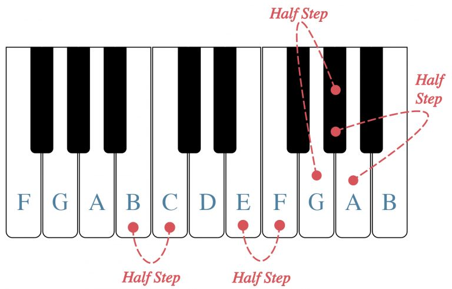
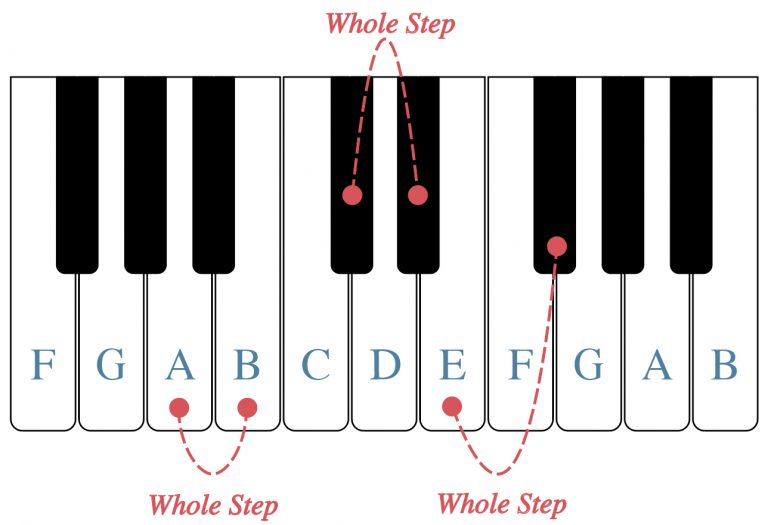
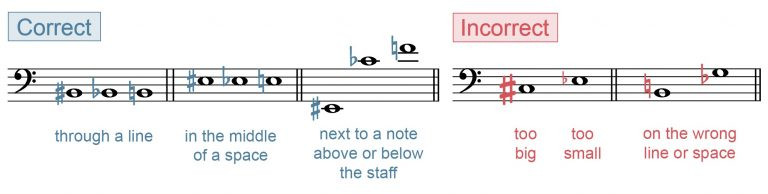
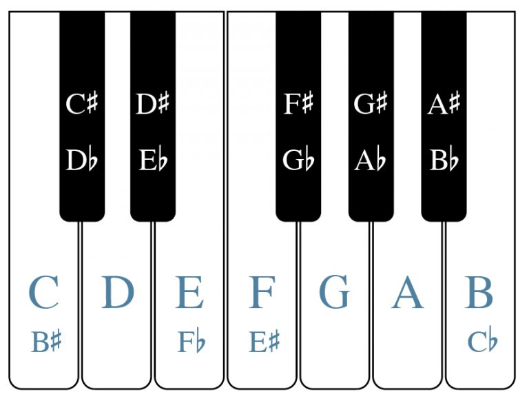
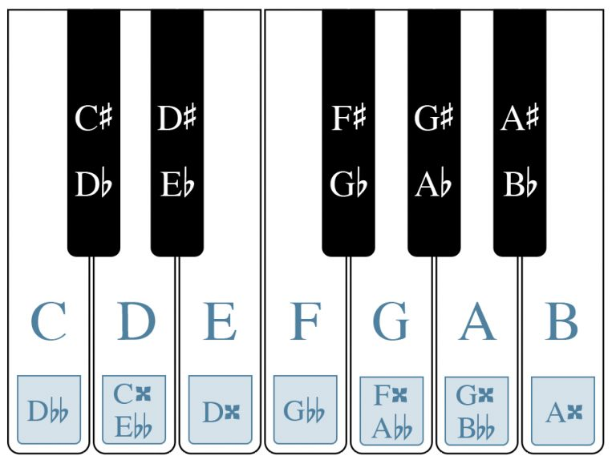
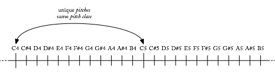
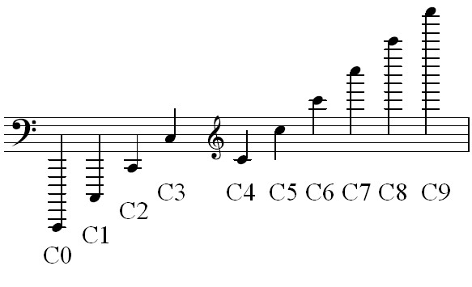
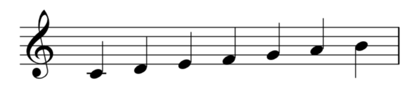
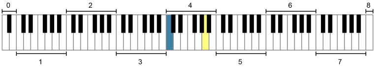

音名与指板地图：12 个音怎么铺满 6 根弦
乐理的第一块地基。先弄清 12 个音、半音和全音、升降号和等音，再把它们铺到指板上：背熟 6、5 弦的自然音，用八度形状扩展到其余四根弦，最后用 12 品对称把整个指板连起来。琴放在手边，每个例子都弹一下。
标了 补充 的内容是讲义作者加的，OMT 里没有。OMT 用钢琴键盘讲半音和全音，讲义里落到吉他指板上的部分大多属于这一类。JustinGuitar 的站点拦截了自动读取，讲义作者没能逐字核对它的课程，读原课程时顺手对照。
1. 全局地图
左列是要掌握的概念（点击跳到对应小节），中列是一句话的核心事实，右列是它在指板上的样子。上面四个讲“声音”，下面四个讲“吉他”。
三条横向联系，读完整份讲义再回来看会更清楚：
- 半音就是一品。钢琴上“相邻的两个键”，在吉他上就是同一根弦上相邻的两品。所以“E–F、B–C 是半音”直接变成“同一根弦上 E 到 F、B 到 C 只差 1 品”。
- 等音解释了为什么一品有两个名字，音高与音级解释了为什么一个名字有好几品。前者是“同一个音高，不同拼写”，后者是“同一个名字，不同八度”。
- 标准调弦决定了所有形状。相邻弦差纯四度（5 个半音），只有 3–2 弦差大三度（4 个半音）。八度形状、后面的音程形状和和弦指型，跨过 3–2 弦时都要错一品，原因都在这里。
2. 逐个概念
① 12 个音
- 是什么
- 西方音乐把一个八度分成 12 个音：C、C♯/D♭、D、D♯/E♭、E、F、F♯/G♭、G、G♯/A♭、A、A♯/B♭、B，然后回到高一个八度的 C。7 个用字母命名的叫自然音（钢琴白键），另外 5 个借相邻字母加升号或降号命名（钢琴黑键）。
- 为什么需要
- 音阶、音程、和弦都是从这 12 个音里挑出几个、按规则组合。12 个音认不全，后面的公式就没法落到琴上。
- 在指板上
- 任何一根弦，从空弦往上弹 12 品，正好把 12 个音走一遍，第 12 品回到空弦的音名，高一个八度。
- 常见误解
- “音乐里有 7 个音。”7 个是字母，也就是自然音；能弹出来的不同音级有 12 个。
② 半音与全音
- 是什么
- 半音是西方记谱里最小的音程，在钢琴上就是紧挨着的两个键；全音等于两个半音。OMT 的关键一句：E/F 和 B/C 两对白键之间没有黑键，因为 E–F、B–C 本来就是半音。其余相邻的白键（C–D、D–E、F–G、G–A、A–B）都是全音。
- 为什么需要
- “全 全 半 全 全 全 半”是大调音阶的公式（G4），所有音阶和音程都用半音来数。记住这两个“天然半音”，就能从任何一个自然音推出下一个自然音在哪里。
- 在指板上
- 补充 1 品 = 半音，2 品 = 全音。同一根弦上，相邻两个自然音隔 2 品，只有 E→F、B→C 隔 1 品。所以 6 弦的自然音是 0、1、3、5、7、8、10、12 品（E F G A B C D E），中间的两个“1 品间隔”就是 E–F 和 B–C。
- 听起来
- 半音很紧，像《大白鲨》主题的两个音；全音是“走了一步”，像《生日快乐》开头“祝你生”里从“你”到“生”的那一步。
- 常见误解
- “每两个字母之间都夹着一个升降音。”E–F 和 B–C 之间没有。
③ 升号、降号、还原号
- 是什么
- 变音记号改变一个音的音高：升号 ♯ 升高半音，降号 ♭ 降低半音，还原号 ♮ 取消前面的变音。重升 𝄪 升高全音，重降 𝄫 降低全音。在五线谱上，变音记号写在音符左边，和音符在同一线或同一间（OMT）。
- 为什么需要
- 只有 7 个字母，却要命名 12 个音，剩下 5 个只能借字母加记号。重升重降看起来奇怪，但有些调和和弦离不开它们，比如 E7♯9 的 ♯9 要写成 F𝄪（G9 会讲）。
- 在指板上
- 补充 往高品走一品就是升半音，往低品走一品就是降半音。5 弦 3 品是 C，4 品就是 C♯，2 品是 C♭（也就是 B）。
- 常见误解
- “升号就是黑键。”E♯ 是白键 F，C♭ 是白键 B。升号只是“升高半音”的写法，不管升完落在哪个键上。
④ 等音
- 是什么
- 拼写不同、听起来一样的音叫等音（OMT：enharmonic equivalence）。C♯ 和 D♭ 是等音；F 也叫 E♯，E 也叫 F♭，C 也叫 B♯，B 也叫 C♭；D 还可以写成 C𝄪 或 E𝄫。
- 为什么需要
- 名字反映这个音在调里的角色。OMT 在 Pitch and Pitch Class 一章举的例子：调性音乐里 A♭ 倾向于往下走到 G，G♯ 倾向于往上走到 A。所以虽然同一品，谱上写哪个名字会告诉你它“想去哪里”。
- 在指板上
- 同一品，两个（甚至三个）名字。用哪个由调决定：G 大调里那一品叫 F♯，D♭ 大调里叫 G♭。规则是一个调的七个音每个字母只用一次（G4 会讲）。
- 听起来
- 完全一样。
- 常见误解
- “上行用升号、下行用降号，这是规则。”这只是写半音阶时的一种习惯。在调和和弦里，名字由调和功能决定，跟旋律往哪个方向走无关。
⑤ 音高与音级
- 是什么
- 音高是一个具体频率的音，比如 C4；音级是所有八度上同名（以及等音）的音的集合，比如“C”（OMT：pitch 与 pitch class）。OMT 用美国标准音高记法（ASPN）给八度编号：每个八度从 C 开始到 B 结束，中央 C 是 C4。B♯3 和 C4 同音，但编号不同，因为 B♯ 仍然算在下一个八度里。
- 为什么需要
- 说“弹一个 C”时你指的是音级，说“弹中央 C”时你指的是音高。吉他上同一个音级有好几个位置，有的同音高，有的差八度，分清这两个概念才说得清楚。
- 在指板上
- 补充 标准调弦的空弦音高从 6 弦到 1 弦是 E2、A2、D3、G3、B3、E4。2 弦 1 品就是中央 C（C4）；5 弦 3 品是 C3，低一个八度。
- 补充 吉他谱有个容易混淆的地方：吉他用高音谱号记谱，但实际声音比记谱低一个八度。谱上写中央 C 的位置，在吉他上弹 5 弦 3 品，实际发出的是 C3。
- 常见误解
- “同一个音名的地方，弹出来都一样。”同音级不等于同音高：5 弦 3 品和 2 弦 1 品都是 C，差一个八度。
⑥ 标准调弦
- 是什么
- 补充 6 弦到 1 弦：E A D G B E（E2 A2 D3 G3 B3 E4）。相邻两根弦都差纯四度（5 个半音），只有 3 弦 G 到 2 弦 B 差大三度（4 个半音）。
- 为什么需要
- 调弦决定了指板上所有形状。整套吉他指法里“到了 3、2 弦要错一品”的现象，都来自这一个大三度。
- 在指板上
- “第 5 品等于下一根弦的空弦”：6 弦 5 品 = A，5 弦 5 品 = D，4 弦 5 品 = G，3 弦第 4 品 = B，2 弦 5 品 = E。这也是相对调弦法的原理。
- 听起来
- 纯四度是《婚礼进行曲》开头的两个音，大三度是《圣者进行曲》（When the Saints）开头的两个音。
- 常见误解
- “所有相邻弦都按第 5 品对音。”3 弦对 2 弦用第 4 品。
⑦ 12 品对称
- 是什么
- 补充 12 品正好是空弦高八度，弦长的一半。12 品以上的指板是 0～11 品的重复：13 品 = 1 品高八度，15 品 = 3 品高八度，以此类推。
- 为什么需要
- 只要背熟 0～11 品，整个指板就都会了。把 12 品当成“第二个琴枕”，高把位就不再陌生。
- 在指板上
- 品记是定位标志：3、5、7、9、15 品各一个点，12 品两个点。6 弦上 3、5、7 品分别是 G、A、B，5 弦上是 C、D、E，背品记附近的音最快。
- 常见误解
- “高把位要重新背一遍。”减去 12，就是你已经认识的那一品。
⑧ 八度形状
- 是什么
- 补充 同一个音级在不同弦上的固定相对位置。只要记住 6、5 弦，其他弦上的音都能用这些形状推出来：
-
从 到 品位变化 例子（音 G） 6 弦 4 弦（高八度） +2 品 6 弦 3 品 → 4 弦 5 品 5 弦 3 弦（高八度） +2 品 5 弦 10 品 → 3 弦 12 品 4 弦 2 弦（高八度） +3 品（跨过 3–2 弦多一品） 4 弦 5 品 → 2 弦 8 品 3 弦 1 弦（高八度） +3 品（跨过 3–2 弦多一品） 3 弦 0 品 → 1 弦 3 品 6 弦 1 弦（高两个八度） 同品 6 弦 3 品 → 1 弦 3 品 - 为什么需要
- 这是从“认得 6、5 弦”走到“认得整个指板”的桥。后面所有的指型（和弦、音阶把位）也都是以 6、5 弦的根音定位，再用这些形状扩展。
- 听起来
- 八度是《彩虹之上》（Somewhere Over the Rainbow）开头“Some-where”的大跳。
- 常见误解
- “八度形状只有一种。”跨不跨过 3–2 弦是两种，加上 6→1 弦同品，常用的有三种。
速查：0～12 品的自然音
先只背 6、5 弦两行。其余四行用八度形状推出来，推完再对照这张表。
| 弦 | 0 | 1 | 2 | 3 | 4 | 5 | 6 | 7 | 8 | 9 | 10 | 11 | 12 |
|---|---|---|---|---|---|---|---|---|---|---|---|---|---|
| 1 弦 E | E | F | G | A | B | C | D | E | |||||
| 2 弦 B | B | C | D | E | F | G | A | B | |||||
| 3 弦 G | G | A | B | C | D | E | F | G | |||||
| 4 弦 D | D | E | F | G | A | B | C | D | |||||
| 5 弦 A | A | B | C | D | E | F | G | A | |||||
| 6 弦 E | E | F | G | A | B | C | D | E |
3. 交互指板
点任意一格都能听到这个音，下面会显示它的名字和音高。“一个音”模式会用虚线画出八度形状。“找音小测”会隐藏所有音名，随机出 10 题。
点一格试试。
4. 上琴练习
开节拍器，每次 5～10 分钟，分几天做。每项都写了完成标准，达到了再往下走。
- 念着弹 6、5 弦自然音。节拍器 60，每拍一个音，从空弦弹到 12 品再弹回来，嘴里念音名。 完成标准：两根弦各连续两遍不出错、不停顿。
- 按五度圈顺序找音。在 6 弦上按 C、G、D、A、E、B、F♯、C♯、A♭、E♭、B♭、F 的顺序每拍弹一个，再在 5 弦上做一遍。这个顺序会在 G4 再见到。 完成标准：60 BPM 下 12 个音不停顿；之后提到 80。
- 一个音找遍 6 根弦。选一个音（先 G，再 C，再 F♯），用八度形状在 6 根弦上各弹一次，同时说出用的是哪个形状。可以用第 3 节的“一个音”模式检查。 完成标准：每个音 15 秒内找全。网站「指板」页的找音练习会自动计时。
- 相对调弦与音准检查。补充 用“第 5 品对下一根空弦、3 弦用第 4 品”的方法调一次弦，再用调音器核对。然后比较每根弦 12 品泛音和 12 品按音，两者应该一样高。 完成标准：说得出为什么 3 弦用第 4 品；如果泛音和按音差得多，说明琴的音准需要调整。
- 两套名字都练。任选一根弦，上行时念升号名（C、C♯、D……），下行时念降号名（C、B、B♭……）。这只是为了两套名字都熟，真正用哪个名字由调决定。 完成标准：任意一品，两个名字张口就来。
5. 分歧点
记指板的三种思路 补充
| 思路 | 做法 | 好处 | 局限 | 什么时候用 |
|---|---|---|---|---|
| 按弦记 | 一根弦一根弦地背自然音 | 直接，适合起步 | 容易只熟 6 弦，换到 3、4 弦又要数 | 只用于 6、5 两根根音弦 |
| 按音记 | 一个音在 6 根弦上全部找出来，用八度形状连起来 | 建立“音”的网络，换弦不怕 | 一开始慢 | 本模块的主力练法 |
| 按形状记 | 借和弦指型、音阶把位里的根音定位 | 和弹奏直接挂钩 | 离开熟悉的形状就找不到音 | 学完 G5 CAGED 之后作为补充 |
什么时候叫 F♯，什么时候叫 G♭
| 看什么 | 例子 |
|---|---|
| 调号 | G 大调有 F♯，没有 G♭；D♭ 大调有 G♭。一个调的七个音每个字母只用一次。 |
| 和弦的拼写 | D 大三和弦是 D–F♯–A，三个音隔着字母叠三度；写成 D–G♭–A 就看不出它是三度叠置的和弦了（G3、G5 会讲）。 |
| 这个音想去哪里 | OMT 的例子：A♭ 倾向于往下到 G，G♯ 倾向于往上到 A。 |
| 还不知道调的时候 | 标指板、做找音练习时两个名字都写，或者先用一套，等学了调再按调拼写。 |
6. 读原资料指南
下面三章 OMT 的原文（含中英对照与谱例图）与 JustinGuitar 本地精要已直接嵌入本节下方，同时在「本周 / 今日」G1 页面也可打卡已读。
必须精读（带着第 9 节的问题去读）：
- OMT Half Steps, Whole Steps, and Accidentals：全篇都短，重点是 Half Steps and Whole Steps、Sharps, Flats, and Naturals、Enharmonic equivalence 三节，以及 Example 7 的重升重降。页面里的拖放练习都做一遍。 已嵌入下方全文
- OMT ASPN：中央 C = C4、每个八度从 C 开始、B♯3 和 C4 为什么编号不同。 已嵌入下方全文
- OMT Pitch and Pitch Class：只读 Pitch 和 Pitch Class 两节，重点是八度等价、等音等价，以及 A♭ 和 G♯ 的那个例子。 已嵌入下方全文
- JustinGuitar Grade 1：Notes, Sharps & Flats & Octaves：看 Justin 怎么安排背指板的顺序和八度练习，和本讲义对照。
📖 本地精要（免跳转直接看：JustinGuitar 实用乐理 Grade 1：12 平均律半音圈、B–C / E–F 无升降与八度跳板）
- 【两大无半音铁律】12 个音围绕圆圈排列，唯独 B–C 与 E–F 之间天然只有 1 品（半音），其余相邻字母均隔 2 品（全音）。
- 【6 弦与 5 弦是全指板导航锚点】先背熟 6 弦和 5 弦 0～12 品的自然音（0/1/3/5/7/8/10/12 品），再用“6→4 弦隔一弦高 2 品”“4→2 弦隔一弦高 3 品”的八度跳板推导全指板。
可以跳过：OMT Pitch and Pitch Class 里的 Integer Notation（给无调性音乐的集合论用的，现在用不上）；OMT 上一章 The Keyboard and the Grand Staff 里关于五线谱的部分，如果你目前只看 TAB，可以等 G2 再回来看。
半音、全音与变音记号Half Steps, Whole Steps, and AccidentalsOMT · 半音、全音与变音记号
Half Steps, Whole Steps, and Accidentals半音、全音与变音记号
- A half step above a key on the piano is the key to its immediate right, while a half step below a key on the piano is the key to its immediate left.在钢琴上，某个键往上一个半音，就是紧挨在它右边的那个键；往下一个半音，是紧挨在它左边的那个键。
- A whole step is two half steps. A whole step above is two keys to its right, while a whole step below is two keys to its left.一个全音等于两个半音。往上一个全音是往右数两个键，往下一个全音是往左数两个键。
- An accidental changes the pitch of a note. A sharp raises a note by a half step, while a flat lowers a note by a half step. A natural cancels a previous accidental.变音记号改变一个音的音高。升号把音升高一个半音，降号把音降低一个半音，还原号取消前面出现过的变音记号。
- A double sharp raises a note by a whole step, while a double flat lowers a note by a whole step.重升号把音升高一个全音，重降号把音降低一个全音。
- Be sure to write accidentals to the left of a note, directly across the line or space on which a note appears.变音记号一定要写在音符左边，并且正好对齐音符所在的那条线或那个间。
- Notes have enharmonic equivalence when they are spelled differently but sound the same.拼写不同、但听起来一样的音，彼此是等音。
In the last chapter, The Keyboard and the Grand Staff, we discussed the letter names of the white keys on the piano keyboard and noted that the black keys are grouped into alternating sets of two or three. Before we discuss the names of the black keys, however, we must first learn about half steps and whole steps.上一章 The Keyboard and the Grand Staff（键盘与大谱表）讲了钢琴白键的音名，也提到黑键是两个一组、三个一组交替排列的。不过在给黑键起名字之前，得先学半音和全音。
Open Music Theory · 半音、全音与变音记号（Half Steps, Whole Steps, and Accidentals）。原文作者：Chelsey Hamm。Open Music Theory, Version 2，CC BY-SA 4.0。中文为本站翻译，以英文原文为准。
半音与全音Half Steps and Whole StepsOMT · 半音、全音与变音记号
Half Steps and Whole Steps半音与全音
A half step is considered to be the smallest interval, or distance between two notes, in Western musical notation. Example 1 shows a piano keyboard with the letter names of the white-key pitches and some half steps labeled. On the piano keyboard (see Example 1), for most of the white-key notes, a half step above that note will be the black key to its upper right, while a half step below it will be the black key to its upper left. For example, the black key to the upper right of G is “in between” the notes G and A; one would say that this black key is a half step above G and a half step below A. Two pairs of white keys—E/F and B/C—do not have black keys in between them (see Example 1). This is because E–F and B–C are both half steps. Having the black keys grouped into sets of either two or three makes it easier for a keyboardist to see and feel them more quickly.在西方记谱法里，半音被看作最小的音程，也就是两个音之间的距离。例 1 是一张钢琴键盘，白键标了音名，还标出了几个半音。在钢琴键盘上（见例 1），对大多数白键来说，往上一个半音是它右上方的黑键，往下一个半音是它左上方的黑键。比如 G 右上方的黑键夹在 G 和 A“中间”：可以说这个黑键比 G 高一个半音、比 A 低一个半音。有两对白键——E/F 和 B/C——中间没有黑键（见例 1），因为 E–F 和 B–C 本身就是半音。黑键分成两个一组或三个一组，键盘手就能更快地看到、摸到它们。

A whole step is the equivalent of two half steps. Example 2 shows a piano keyboard with the letter names of the white key pitches labeled, and some whole steps bracketed. Pairs of white keys with a black key in between them (A and B, C and D, D and E, F and G, and G and A) are a whole step apart. To find a whole step above the notes E or B, simply count two keys to the right: a whole step above E is the black key to the right of the note F, while a whole step above B is the black key to the right of the note C. Likewise, count two keys to the left to find a whole step below the notes C or F: the black keys to the left of the notes B and E, respectively. To find a whole step from a black key you will want to count two keys to the right or left. For example, a whole step above the black key to the right of C is the black key to the right of the note D. A whole step below the black key to the left of B is the black key to the left of the note A.全音等于两个半音。例 2 是一张钢琴键盘，白键标了音名，并用括线标出了几个全音。中间夹着一个黑键的两个白键（A 和 B、C 和 D、D 和 E、F 和 G、G 和 A）相距一个全音。要找 E 或 B 往上的全音，往右数两个键就行：E 往上一个全音是 F 右边的黑键，B 往上一个全音是 C 右边的黑键。同样，要找 C 或 F 往下的全音，往左数两个键：分别是 B 左边的黑键和 E 左边的黑键。从黑键出发找全音，也是往右或往左数两个键。比如 C 右边那个黑键往上一个全音，是 D 右边的黑键；B 左边那个黑键往下一个全音，是 A 左边的黑键。

What do half steps and whole steps sound like? The short video shown in Example 3 demonstrates:半音和全音听起来是什么样？例 3 这段短视频做了演示：
Example 3. Dr. Chelsey Hamm (Christopher Newport University) demonstrates the sound of a half step and a whole step.例 3. Chelsey Hamm 博士（克里斯托弗·纽波特大学）演示半音和全音的声音。
Open Music Theory · 半音、全音与变音记号（Half Steps, Whole Steps, and Accidentals）。原文作者：Chelsey Hamm。Open Music Theory, Version 2，CC BY-SA 4.0。中文为本站翻译，以英文原文为准。图片版权：Piano Half Steps © Sarah Louden is licensed under a CC BY-SA (Attribution ShareAlike) license；Piano Whole Steps © Sarah Louden is licensed under a CC BY-SA (Attribution ShareAlike) license；Correct and Incorrect Accidentals © Sarah Louden is licensed under a CC BY-SA (Attribution ShareAlike) license；Same Note Two Accidentals © Chelsey Hamm is licensed under a CC BY-SA (Attribution ShareAlike) license；Piano Black Keys © Sarah Louden is licensed under a CC BY-SA (Attribution ShareAlike) license；Piano Double Accidentals © Sarah Louden is licensed under a CC BY-SA (Attribution ShareAlike) license
升号、降号与还原号Sharps, Flats, and NaturalsOMT · 半音、全音与变音记号
Sharps, Flats, and Naturals升号、降号与还原号
An accidental changes the pitch of a note. A sharp (♯) looks like a tilted hashtag, and it raises a note by a half step. A flat (♭) looks like a slanted lowercase “b,” and it lowers a note by a half step. A natural (♮) looks like a tilted box with a line sticking out of the top left and bottom right corners, and it cancels a previous accidental such as a sharp or flat. Sharps, flats, and naturals are the three most common accidentals.变音记号改变一个音的音高。升号（♯）像一个歪着的井号，把音升高一个半音。降号（♭）像一个斜着的小写“b”，把音降低一个半音。还原号（♮）像一个歪着的方框，左上角和右下角各伸出一条线，它取消前面出现过的变音记号，比如升号或降号。升号、降号、还原号是最常见的三种变音记号。
A double sharp (usually notated as 𝄪 or less commonly as ♯♯) raises a note by two half steps (i.e., a whole step). A double flat (𝄫) lowers a note by two half steps (i.e., a whole step). Accidentals are always written to the left of a note, regardless of stem direction. An accidental should be written directly across the line or space on which a note appears.重升号（通常写成 𝄪，少数情况写成 ♯♯）把音升高两个半音（也就是一个全音）。重降号（𝄫）把音降低两个半音（也就是一个全音）。不管符干朝哪边，变音记号总是写在音符左边，并且要正好对齐音符所在的那条线或那个间。
Example 4 shows both correct and incorrect ways to notate sharps, flats, and naturals:例 4 展示了升号、降号、还原号的正确写法和错误写法：

When two notes appear on the same line or space but have a different accidental, the accidentals apply to the first and second notes respectively. Example 5 shows this:同一条线或同一个间上出现两个音、变音记号不同时，两个记号分别作用于第一个音和第二个音。例 5 就是这样：
You can practice identifying half and whole steps in treble and bass clefs by dragging and dropping in the following easier exercise:下面这个较简单的练习，用拖放的方式在高音谱号和低音谱号里识别半音和全音：
You can practice identifying half and whole steps in all clefs by dragging and dropping in the following more difficult exercise:下面这个较难的练习，用拖放的方式在所有谱号里识别半音和全音：
Open Music Theory · 半音、全音与变音记号（Half Steps, Whole Steps, and Accidentals）。原文作者：Chelsey Hamm。Open Music Theory, Version 2，CC BY-SA 4.0。中文为本站翻译，以英文原文为准。图片版权：Piano Half Steps © Sarah Louden is licensed under a CC BY-SA (Attribution ShareAlike) license；Piano Whole Steps © Sarah Louden is licensed under a CC BY-SA (Attribution ShareAlike) license；Correct and Incorrect Accidentals © Sarah Louden is licensed under a CC BY-SA (Attribution ShareAlike) license；Same Note Two Accidentals © Chelsey Hamm is licensed under a CC BY-SA (Attribution ShareAlike) license；Piano Black Keys © Sarah Louden is licensed under a CC BY-SA (Attribution ShareAlike) license；Piano Double Accidentals © Sarah Louden is licensed under a CC BY-SA (Attribution ShareAlike) license
钢琴键盘上的黑键The Black Keys on the Piano KeyboardOMT · 半音、全音与变音记号
The Black Keys on the Piano Keyboard钢琴键盘上的黑键
Example 6 shows a piano keyboard with the letter names of the black keys labeled. Black keys that are a half step above a white key take the name of the white key and add the word “sharp.” For example, the black key to the right of the note C is called “C-sharp” and is written as C♯. Black keys that are a half step below a white key take the name of the white key and add the word “flat.” For example, the black key to the left of the note D is called “D-flat” and is written as D♭.例 6 是一张标了黑键音名的钢琴键盘。比某个白键高一个半音的黑键，用那个白键的名字加“升”来称呼。比如 C 右边的黑键叫“升 C”，写作 C♯。比某个白键低一个半音的黑键，用那个白键的名字加“降”来称呼。比如 D 左边的黑键叫“降 D”，写作 D♭。

F is also known as E♯, and E is also known as F♭. C is also known as B♯, and B is also known as C♭. Example 7 also shows some of the double-sharp and double-flat accidentals. A double sharp is two half steps above a note. For example, D𝄪 is also E; E𝄪 is also F♯ (or G♭). A double flat is two half steps below a note. For example, A𝄫 is also G; C𝄫 is also B♭ or A♯.F 也叫 E♯，E 也叫 F♭；C 也叫 B♯，B 也叫 C♭。例 7 还标出了一些重升和重降。重升是比原音高两个半音，比如 D𝄪 就是 E，E𝄪 就是 F♯（或 G♭）。重降是比原音低两个半音，比如 A𝄫 就是 G，C𝄫 就是 B♭ 或 A♯。

You can practice identifying the black and white keys on the piano by dragging and dropping in the following exercise:下面这个练习，用拖放的方式识别钢琴的黑键和白键：
Open Music Theory · 半音、全音与变音记号（Half Steps, Whole Steps, and Accidentals）。原文作者：Chelsey Hamm。Open Music Theory, Version 2，CC BY-SA 4.0。中文为本站翻译，以英文原文为准。图片版权：Piano Half Steps © Sarah Louden is licensed under a CC BY-SA (Attribution ShareAlike) license；Piano Whole Steps © Sarah Louden is licensed under a CC BY-SA (Attribution ShareAlike) license；Correct and Incorrect Accidentals © Sarah Louden is licensed under a CC BY-SA (Attribution ShareAlike) license；Same Note Two Accidentals © Chelsey Hamm is licensed under a CC BY-SA (Attribution ShareAlike) license；Piano Black Keys © Sarah Louden is licensed under a CC BY-SA (Attribution ShareAlike) license；Piano Double Accidentals © Sarah Louden is licensed under a CC BY-SA (Attribution ShareAlike) license
等音Enharmonic equivalenceOMT · 半音、全音与变音记号
Enharmonic equivalence等音
You will have noticed by now that each key on the piano keyboard has more than one name. Notes have enharmonic equivalence when they are spelled differently but sound the same. For example, you can see that C♯ and D♭ are enharmonically equivalent, as seen in Examples 6 and 7. Example 7 also shows that the note D is enharmonically equivalent with the notes C𝄪 and E𝄫. In other words, playing a D, C𝄪, or E𝄫 will result in the same pitch.你应该已经发现了：钢琴上每个键都不止一个名字。拼写不同、但听起来一样的音，彼此是等音。比如从例 6 和例 7 可以看到，C♯ 和 D♭ 是等音。例 7 还显示，D 和 C𝄪、E𝄫 也是等音。换句话说，弹 D、C𝄪 或 E𝄫，出来的是同一个音高。
Open Music Theory · 半音、全音与变音记号（Half Steps, Whole Steps, and Accidentals）。原文作者：Chelsey Hamm。Open Music Theory, Version 2，CC BY-SA 4.0。中文为本站翻译，以英文原文为准。
音高PitchOMT · 音高与音级
Pitch音高
Pitches are discrete tones with individual frequencies.音高是一个个独立的音，各有自己的频率。
The concept of pitch, then, does not imply octave equivalence. C4 is a pitch, and it is not the same pitch as C3.所以“音高”这个概念不包含八度等价。C4 是一个音高，它和 C3 不是同一个音高。
Open Music Theory · 音高与音级（Pitch and Pitch Class）。原文作者：Megan Lavengood。Open Music Theory, Version 2，CC BY-SA 4.0。中文为本站翻译，以英文原文为准。
音级Pitch ClassOMT · 音高与音级
Pitch Class音级
Throughout set theory, the word "class" means "group." So a pitch class is a group of pitches—all pitches related by octave equivalence and enharmonic equivalence. You have probably encountered both of these concepts before, even if not by name.在集合论里，“级”（class）的意思是“一组”。所以音级就是一组音高——所有通过八度等价和等音联系起来的音高。这两个概念你多半早就碰到过，只是不知道它们叫什么。
Our system of letter names for notes implies octave equivalence: equivalence between pitches that are spelled the same but are any number of octaves apart. C4 is the same as C3 is the same as C9, and so on, because they are all Cs (Example 1).我们给音起字母名的这套办法，本身就隐含了八度等价：拼写相同、相隔任意个八度的音高被看作等价。C4、C3、C9 都是一回事，因为它们都是 C（例 1）。
When someone says "there are twelve notes," they are implying enharmonic equivalence. Two notes are enharmonically equivalent if you would press the same key on the piano to play them—even if the spelling is different. Enharmonic equivalence is the sense in which A♭ and G♯ are "the same." While tonal music nearly always distinguishes between enharmonic pitches—A♭ as le (↓6̂) leads to G, but G♯ as si (↑5̂) leads to A—post-tonal music is often different.[1] Because many composers no longer felt constrained by a tonal center, the relationships among scale degrees and spellings aren’t important.有人说“一共十二个音”时，就隐含了等音。如果在钢琴上弹两个音要按同一个键，那么即使拼写不同，它们也是等音。说 A♭ 和 G♯“是同一个音”，就是在等音这层意思上说的。调性音乐几乎总要区分等音的两种拼法——A♭ 作为 le（↓6̂）要走向 G，而 G♯ 作为 si（↑5̂）要走向 A——但后调性音乐往往不同。[1] 很多作曲家不再受调性中心的约束，音阶级数之间的关系和拼法也就不重要了。
In summary, pitch classes are groups of pitches related by octave and enharmonic equivalence. A♭4, A♭3, G♯2, etc. are all members of the same pitch class.总之，音级是一组通过八度等价和等音联系起来的音高。A♭4、A♭3、G♯2 等等都属于同一个音级。

Example 1. Pitch versus pitch class.例 1. 音高与音级。
[1] Post-tonal music is extremely various. Composers have individual compositional styles, aesthetic goals, and unique conceptions of pitch. All this is to say that you must approach a composition with flexibility. For example: because it is quasi-tonal, Debussy’s music often benefits from a view that does not assume enharmonic equivalence. But sometimes it does. You must rely on your musical intuitions when analyzing this music, and you should also be willing to approach pitch in these compositions from multiple perspectives until you find one that seems most appropriate.后调性音乐五花八门。作曲家各有各的创作风格、审美追求和对音高的独特理解。也就是说，面对一首作品必须灵活。比如德彪西的音乐带有“准调性”，所以不预设等音的分析视角常常更合适——但有时又要用到等音。分析这类音乐时得依靠你的音乐直觉，也要愿意从多个角度看待其中的音高，直到找到最合适的那个。
Open Music Theory · 音高与音级（Pitch and Pitch Class）。原文作者：Megan Lavengood。Open Music Theory, Version 2，CC BY-SA 4.0。中文为本站翻译，以英文原文为准。图片版权：Pitch Space © Bryn Hughes is licensed under a CC BY-SA (Attribution ShareAlike) license；Pitch-class-Space © Bryn Hughes is licensed under a CC BY-SA (Attribution ShareAlike) license
美国标准音高记法（ASPN）American Standard Pitch Notation (ASPN)OMT · 美国标准音高记法
American Standard Pitch Notation (ASPN)美国标准音高记法（ASPN）
- American Standard Pitch Notation (ASPN) provides labels for specific musical frequencies by combining a note name (such as C) with a subscript octave designation (such as 4).美国标准音高记法（ASPN）把音名（比如 C）和下标的八度编号（比如 4）合在一起，给具体的频率起名字。
- A pitch is a discrete tone with an individual frequency (e.g. C4), while a pitch class is less specific (e.g., C in general).音高是一个有特定频率的独立的音（比如 C4），音级则没那么具体（比如泛指 C）。
- ASPN differentiates between octaves, from C to B. The octaves are labeled from lowest to highest, beginning with 0 and continuing in ascending numerical order (1, 2, etc.).ASPN 按八度区分，每个八度从 C 到 B。八度从低到高编号，从 0 开始，依次往上（1、2……）。
- A piano keyboard primarily uses the ASPN octave designations 1 through 7, although small portions of octaves 0 and 8 are included.钢琴键盘主要用到 ASPN 的第 1 到第 7 个八度，另外还包括第 0 和第 8 个八度的一小部分。
- Middle C is C4 in ASPN. It is helpful to memorize the ASPN label of this note as a starting point.中央 C 在 ASPN 里是 C4。把这个音的 ASPN 名字记住、当作起点，会很方便。
Open Music Theory · 美国标准音高记法（ASPN）（American Standard Pitch Notation (ASPN)）。原文作者：Chelsey Hamm and Bryn Hughes。Open Music Theory, Version 2，CC BY-SA 4.0。中文为本站翻译，以英文原文为准。
美国标准音高记法与“音高 vs 音级”American Standard Pitch Notation and Pitch versus Pitch ClassOMT · 美国标准音高记法
American Standard Pitch Notation and Pitch versus Pitch Class美国标准音高记法与“音高 vs 音级”
In order to discuss specific notes, or pitches, we will use American Standard Pitch Notation, abbreviated ASPN. ASPN designates specific musical pitches by combining a note name (such as C) with a subscript octave designation (such as 4), creating a bipartite label (for example, C4). ASPN labels are very useful, since they can identify every possible musical note within human hearing range, from the lowest pitches to the highest.为了讨论具体的音，也就是音高，我们使用美国标准音高记法，简称 ASPN。ASPN 把音名（比如 C）和下标的八度编号（比如 4）组合起来，形成一个两部分的名字（比如 C4），用来指定具体的音高。ASPN 非常好用，人耳能听到的每一个音，从最低到最高，都能用它标出来。
The Reading Clefs chapter introduced octave equivalence, the concept that explains why notes one or more octaves apart have the same letter name. Music theorists distinguish between a pitch, a discrete tone with an individual frequency (e.g. C4 using ASPN), versus a pitch class, which is less specific (e.g., C in general). A pitch class includes all the pitches with the same letter name, in any octave, along with their enharmonic equivalents. For example, all Cs are the same pitch class, and the enharmonically equivalent notes D𝄫 and B♯ are also part of the C pitch class; see Pitch and Pitch Class for more information. In this chapter we are naming specific pitches with ASPN.Reading Clefs（读谱号）一章介绍过八度等价：它解释了为什么相隔一个或几个八度的音有相同的字母名。乐理学者把音高（一个有特定频率的独立的音，比如用 ASPN 写的 C4）和音级（没那么具体，比如泛指 C）区分开。一个音级包含所有同字母名的音高，不论在哪个八度，也包含它们的等音。比如所有的 C 属于同一个音级，与 C 等音的 D𝄫 和 B♯ 也属于 C 这个音级；详见 Pitch and Pitch Class（音高与音级）。本章用 ASPN 给具体的音高命名。
Open Music Theory · 美国标准音高记法（ASPN）（American Standard Pitch Notation (ASPN)）。原文作者：Chelsey Hamm and Bryn Hughes。Open Music Theory, Version 2，CC BY-SA 4.0。中文为本站翻译，以英文原文为准。
ASPN 与八度编号ASPN and Octave DesignationsOMT · 美国标准音高记法
ASPN and Octave DesignationsASPN 与八度编号
ASPN differentiates between octaves, beginning with the pitch C and ending with the pitch B.[1] This means that each new octave designation begins on the note C, as seen inExample 1. The octaves are labeled from lowest to highest, beginning with 0 and continuing in numerical order (1, 2, 3, etc.). The pitch middle C is C4, which is useful to memorize.ASPN 按八度区分，每个八度从 C 开始、到 B 结束。[1] 也就是说，每换一个八度编号，都是从 C 开始，见例 1。八度从低到高编号，从 0 开始，依次往上（1、2、3……）。中央 C 是 C4，值得记住。

All letter names within an octave (below the C of the next octave) receive the same octave designation. For example, all of the notes in Example 2 would be designated in the 4 octave, because they are above C4 but below C5. Accidentals applied to a note do not have an effect on its ASPN number. For example, B♯3 and C4 have different octave numbers despite being enharmonically equivalent, because the B♯ is still considered part of the lower octave.同一个八度里（下一个八度的 C 以下）的所有字母名，八度编号都相同。比如例 2 里的音都在 C4 之上、C5 之下，所以都属于第 4 个八度。音符上加的变音记号不影响它的 ASPN 编号。比如 B♯3 和 C4 虽然是等音，八度编号却不同，因为 B♯ 仍然算在低一个的八度里。

You can practice ASPN notation in all clefs in the following exercise:下面这个练习，在所有谱号里练 ASPN 记法：
[1] You may wonder why octaves numbers change with the pitch C instead of A (the beginning of the alphabet). About this, Robert Young wrote: "It has become custom for musical purposes to consider the tone C as the point from which to count complete octaves. While this is not universally true and indeed logic might point to A as the starting point, yet common usage has settled on C." See Robert W. Young, "Terminology for Logarithmic Frequency Units," Journal of the Acoustical Society of America 11 (1939): 135.你也许会好奇：八度编号为什么在 C 处换，而不是在 A（字母表的开头）处换？Robert Young 写过：“出于音乐上的用途，人们习惯以 C 音为起点来计算完整的八度。这并非处处如此，从逻辑上说也许 A 才该是起点，但通行的用法已经定在了 C。”见 Robert W. Young, "Terminology for Logarithmic Frequency Units," Journal of the Acoustical Society of America 11 (1939): 135.
Open Music Theory · 美国标准音高记法（ASPN）（American Standard Pitch Notation (ASPN)）。原文作者：Chelsey Hamm and Bryn Hughes。Open Music Theory, Version 2，CC BY-SA 4.0。中文为本站翻译，以英文原文为准。图片版权：Octave Designations © Wikimedia Commons is licensed under a Public Domain license；Octave 4 ASPN Labels © Chelsey Hamm is licensed under a CC BY-SA (Attribution ShareAlike) license；Piano ASPN Labels © AlwaysAngry adapted by Megan Lavengood is licensed under a Public Domain license
ASPN 与键盘ASPN and the KeyboardOMT · 美国标准音高记法
ASPN and the KeyboardASPN 与键盘
ASPN labels are very helpful for finding specific notes on the piano keyboard. Example 3 depicts a piano keyboard with each octave labeled using ASPN notation. As you can see, the piano keyboard spans the full octaves 1 to 7. It also contains a small part of both octaves 0 and 8. ASPN labels are the same regardless of instrument or voice type. In other words, a C4 will always be labeled as such regardless of whether it is produced with a flute, trombone, violin, or voice.在钢琴键盘上找具体的音时，ASPN 名字非常有用。例 3 是一张钢琴键盘，每个八度都用 ASPN 标了出来。可以看到，钢琴键盘覆盖完整的第 1 到第 7 个八度，另外还有第 0 和第 8 个八度的一小部分。不论什么乐器、什么声部，ASPN 名字都一样。换句话说，C4 不论是长笛、长号、小提琴还是人声发出来的，都叫 C4。

Open Music Theory · 美国标准音高记法（ASPN）（American Standard Pitch Notation (ASPN)）。原文作者：Chelsey Hamm and Bryn Hughes。Open Music Theory, Version 2，CC BY-SA 4.0。中文为本站翻译，以英文原文为准。图片版权：Octave Designations © Wikimedia Commons is licensed under a Public Domain license；Octave 4 ASPN Labels © Chelsey Hamm is licensed under a CC BY-SA (Attribution ShareAlike) license；Piano ASPN Labels © AlwaysAngry adapted by Megan Lavengood is licensed under a Public Domain license
ASPN 与五线谱ASPN and Staff NotationOMT · 美国标准音高记法
ASPN and Staff NotationASPN 与五线谱
Example 4 shows ASPN labels for common notes in the treble, bass, alto, and tenor clefs. Memorizing the location of C4 in each clef can make finding ASPN labels quicker and easier.例 4 给出了高音、低音、中音、次中音四种谱号里常见音的 ASPN 名字。记住 C4 在每种谱号里的位置，找 ASPN 名字会又快又容易。
Example 4. ASPN labels for notes in four clefs.例 4. 四种谱号里各音的 ASPN 名字。
Open Music Theory · 美国标准音高记法（ASPN）（American Standard Pitch Notation (ASPN)）。原文作者：Chelsey Hamm and Bryn Hughes。Open Music Theory, Version 2，CC BY-SA 4.0。中文为本站翻译，以英文原文为准。
⚡ 本模块其余配套课程与工具的本地精要 / 平替
- Scotty West《Absolutely Understand Guitar》（32 课全套免费吉他乐理神课，强烈建议按序看） ↗
📖 本地精要（免跳转直接看：Scotty West 32 课《Absolutely Understand Guitar》全套核心提炼）
- 【指板底层几何】吉他不是 6 根独立的弦，而是一条折叠起来的半音阶尺子；由于 3→2 弦是大三度（4 半音）而非纯四度（5 半音），任何跨过 2、3 弦的音程、和弦或音阶形状都必须往高品方向平移 +1 品。
- 【五指模式（5 Finger Patterns）】CAGED 的本质是同一条大调音阶在指板上的 5 个相邻切片，每个切片内部都装着该调的 I、IV、V 三和弦。
- 【色彩与情绪光谱】把 7 种调式按明亮到阴暗排列（利底亚 → 伊奥尼亚 → 混合利底亚 → 多利亚 → 爱奥利亚 → 弗里几亚 → 洛克里亚），每往右一步正好降一个音级（五度圈逆时针移动一格）。
- musictheory.net：Steps and Accidentals ↗
📖 本地精要（免跳转直接看：musictheory.net 互动图文短课核心提要）
- 该短课用极简五线谱动画演示基础乐理定义（音符时值、拍号、半音全音、大调/小调音阶、音程转位、三/七和弦及罗马数字）。
- 这些核心定义已 100% 转化为电吉他指板视角，嵌在本模块对应的「讲义」与每日「双语精读卡片」中，读完页内卡片即可完全掌握。
- musictheory.net 练习：Fretboard Note Identification（指板找音） ↗
📖 本地精要（免跳转直接看：musictheory.net 指板识别练习（本站指板页已内置同款训练））
- 直接在本站「指板与五度圈」开启“找音练习”（支持屏幕点击或 🎙️ 真琴麦克风识别），或切换音阶/和弦做把位聚焦。
- Muted.io（极简交互式指板、五度圈与钢琴对照可视化工具） ↗
📖 本地精要（免跳转直接看：Muted.io 交互指板与五度圈对照（已完整内置于本站指板页））
- 【本站直接平替】本站「指板与五度圈」已内置交互式五度圈、顺阶三/七和弦、同主音小调借用和弦与副属和弦一键试听面板。
- MIT OCW 21M.051 Fundamentals of Music（2007 春） ↗
📖 本地精要（免跳转直接看：MIT OCW 21M.051 Fundamentals of Music：大学乐理地基精要）
- 【音高、节奏与调性的严密公理】从泛音列（八度 2:1、纯五度 3:2）理解为什么纯五度与大三和弦最协和，为什么导音（7→1）与小七度（♭7→3）构成的属七三全音具有不可抗拒的向心力。
- Barrett Tagliarino《Guitar Fretboard Workbook》（MI 教材，手把手填空画指板） ↗
📖 本地精要（免跳转直接看：Barrett Tagliarino《Guitar Fretboard Workbook》（MI 教材）指板通关秘籍）
- 【八度 7 种形状】6→4 弦(+2品)、5→3 弦(+2品)、4→2 弦(+3品)、3→1 弦(+3品)，以及跨两根弦的 6→3 弦(-3品)、5→2 弦(-2品)、4→1 弦(-2品)——练熟这 7 个几何对角线，1 秒锁定全指板同名音。
- 【密排三和弦水平+垂直矩阵】先在一组弦（如 4–3–2 弦）横向走通原位→一转→二转，再在同一个品位纵向跨 654→543→432→321 四组弦弹同一个和弦。
- Tom Kolb《Music Theory for Guitarists》（Hal Leonard，最直观的吉他乐理入门书） ↗
📖 本地精要（免跳转直接看：Tom Kolb《Music Theory for Guitarists》（Hal Leonard）核心公式表）
- 【音阶与和弦平行数字表】一切音阶与和弦都以同主音大调（1 2 3 4 5 6 7）为标尺：小三=1 ♭3 5，属七=1 3 5 ♭7，多利亚=1 2 ♭3 4 5 6 ♭7，混合利底亚=1 2 3 4 5 6 ♭7，利底亚=1 2 3 ♯4 5 6 7。
7. 自测 5 题
先自己答（上琴题要真的弹），再展开看答案。答不上来的，回第 6 节对应的原资料。
概念 1E♯、C♭、F𝄪、B𝄫 分别和哪个自然音同音？在 6 弦上各是第几品（0～12 品）？
答案
E♯ = F（1 品），C♭ = B（7 品），F𝄪 = G（3 品），B𝄫 = A（5 品）。思路：E–F、B–C 是半音，所以 E 升半音就到 F，C 降半音就到 B；重升、重降是移动一个全音。
概念 2相对调弦时，为什么 3 弦要按第 4 品去对 2 弦空弦，其他弦都按第 5 品？
答案
其他相邻弦都差纯四度，也就是 5 个半音，按第 5 品正好到下一根弦的空弦音；3 弦 G 到 2 弦 B 是大三度，只有 4 个半音，所以按第 4 品。追问：八度形状为什么跨过 3–2 弦要多一品？同一个原因，那里少了一个半音，要多按一品补回来。
辨析 15 弦 3 品和 2 弦 1 品都是 C，它们是同一个音吗？吉他谱上写在“中央 C”位置的音，应该弹哪一个？
答案
同一个音级，不同的音高：5 弦 3 品是 C3，2 弦 1 品是 C4（中央 C），差一个八度。吉他的声音比记谱低一个八度，所以谱上中央 C 的位置要弹 5 弦 3 品，实际发出 C3。补充
辨析 2朋友说：“升号用在上行，降号用在下行，所以 6 弦 2 品往上走叫 F♯，往下走叫 G♭。”这话对吗？
答案
不对，至少不是规则。写半音阶时确实常有这个习惯，但在调和和弦里，名字由调和功能决定：G 大调里那一品永远叫 F♯，不管旋律往哪走。OMT 的例子说明的是功能：A♭ 倾向于往下到 G，G♯ 倾向于往上到 A。拼写反映的是这个音想去哪里，而不是刚才从哪里来。
上琴不看图，在 6 根弦上找出所有的 D（0～12 品），并说出每一步用了哪个八度形状。
答案
6 弦 10 品，5 弦 5 品，4 弦 0 品和 12 品，3 弦 7 品，2 弦 3 品，1 弦 10 品。形状：6 弦 10 品 → 4 弦 12 品（+2）；5 弦 5 品 → 3 弦 7 品（+2）；4 弦 0 品 → 2 弦 3 品（+3）；3 弦 7 品 → 1 弦 10 品（+3）；6 弦 10 品 ↔ 1 弦 10 品（同品）。用第 3 节的“一个音”模式选 D 核对。
8. 在歌里听一听
- Seven Nation Army（The White Stripes）：主 riff 可以全在 5 弦上弹，7-7-10-7-5-3-2。不看下面的答案，先说出每个音名。
音名
E E G E D C B。注意最后的 C–B 只差 1 品，是半音。
- Smoke on the Water（Deep Purple）：主 riff 在 6 弦上是 3-6-8、3-6-9-8、3-6-8-6-3 品。说出音名，再换到 4 弦弹一遍（4 弦的 G 在 5 品）。原版是用纯四度双音弹的，G3 学音程时会再回来。
音名
G B♭ C、G B♭ D♭ C、G B♭ C B♭ G。这首歌在 G 小调里，所以那一品叫 B♭ 而不是 A♯。换到 4 弦是 5-8-10、5-8-11-10、5-8-10-8-5 品。
- 《大白鲨》主题（John Williams）：只有两个音来回，6 弦 0 品和 1 品就能弹，E–F，天然的半音。
和后面模块的连接：G3 音程会把“数品”变成“看形状”，跨过 3–2 弦错一品的规律会再出现一次；G4 大调音阶的“全 全 半 全 全 全 半”在单弦上就是 2 2 1 2 2 2 1 品；G5 CAGED 和 G10 五声把位都用 6、5 弦上的根音定位。
9. 带去原资料的 3 个问题
读讲义只是搭了骨架。下面三个问题讲义没讲透，答案要到原文里找。
- 五线谱上同一小节里，先出现一个 B♭，后面又出现同一个位置的 B，要怎么写才能表示 B 还原？变音记号的书写位置有哪些对错？（OMT Half Steps → Sharps, Flats, and Naturals，Example 4、5）
- OMT 说调性音乐几乎总是区分等音。A♭ 和 G♯ 分别用在什么场合，各自想往哪里走？这和吉他上“同一品两个名字”是什么关系？（OMT Pitch and Pitch Class → Pitch Class）
- Justin 推荐先记哪几根弦、用什么方法练八度？和本讲义“先 6、5 弦，再用八度形状扩展”的顺序一样吗？哪里不一样？（JustinGuitar Grade 1：Notes, Sharps & Flats & Octaves）
读完回到网站，在路线图里勾掉 G1 的第 3、4 步，然后用 /quiz 音名与指板地图 让 AI 反问你。